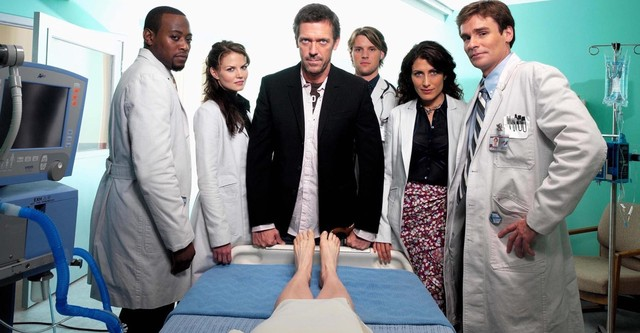

El Dr. House es conocido por su actitud poco convencional, su sarcasmo y su brillantez médica. Es un genio diagnóstico que tiene la habilidad de resolver casos médicos complejos que otros médicos no pueden resolver. House utiliza su intuición y su capacidad para observar hasta los detalles más pequeños para llegar a conclusiones precisas. Sin embargo, la personalidad del Dr. House también es problemática. Es un hombre solitario y antisocial, con una dependencia de analgésicos debido a un dolor crónico en la pierna, resultado de una lesión previa. Además, su actitud desafiante y su falta de empatía hacia los pacientes y colegas a menudo generan conflictos en el hospital.

El Dr. James Wilson es el jefe de oncología del Hospital Princeton-Plainsboro. Estudió en la universidad McGill. Es el mejor y único amigo de House, por lo que solo él se atreve a hablarle con sinceridad y discutirle de tú a tú y además valora mucho la relación de amistad con él. Por lo general no participa en el diagnóstico de los casos, a no ser que aparezca algo de su rama. Wilson suele ser, la mayoría de las veces, quien le ofrece casos irresolubles a House. El personaje ha puesto a prueba a House en varias ocasiones, como en la tercera temporada, cuando propuso la idea de que House aguantara un período de tiempo sin tomar vicodina. Se ha divorciado tres veces y no tiene hijos. En su despacho, llaman la atención los carteles de las películas "Touch of Evil" de Orson Welles y Vértigo de Alfred Hitchcock, que tiene en la pared. Conoció a House durante una convención médica. House le pagó la fianza de la cárcel pues lo habían detenido por agredir a una persona en un bar. House dice que lo hizo porque "la convención era muy aburrida", y necesitaba a alguien con quien ir a beber. Vivió en casa de House durante algunos capítulos, debido a una infidelidad por parte de su mujer.
Foreman es un neurólogo que forma parte del equipo de trabajo en diagnósticos y tratamiento encabezado por Gregory House en el ficticio Hospital Princeton-Plainsboro de Nueva Jersey. Su trabajo, junto con los doctores Cameron y Chase, consiste en ayudar a House a diagnosticar y tratar a los pacientes que se han asignado al departamento.
Chase es uno de los integrantes del equipo médico de House. Es considerado el perro faldero de House, ya que le obedece en todo a pesar de no estar siempre de acuerdo con su criterio médico o su forma de pensar, al contrario de Foreman, que discrepa de House siempre que sea necesario. House pierde la confianza en él después de que en la primera temporada lo delatase a Vogler, el entonces administrador del Hospital, recibiendo una sanción de la junta de médicos. Chase explica que lo hizo con el fin de proteger su empleo. Aunque esto lo hizo parecer sospechoso ante sus compañeros, en la tercera temporada Chase es presionado por el oficial Tritter para obtener información acerca de House, pero decide no ceder y no ayudarlo.
Desde los 12 años supo que quería dedicarse a la medicina. Se licenció en medicina con 25 años y cuatro años más tarde se convirtió en la directora del hospital siendo la primera mujer en conseguirlo y la segunda persona más joven en lograrlo. Está especializada en endocrinología, tiene un sentido de la responsabilidad que le lleva a continuos enfrentamientos con House, al que conoció en el pasado y con el que se ha dado a entender que mantuvo una relación en su juventud. Sea como sea, siempre termina defendiéndolo e, incluso, llegó a cometer perjurio para ayudarlo. En el sexto capítulo de la quinta temporada (Joy, Alegría), pierde la posibilidad de adoptar un bebé, por lo que queda devastada, y al final del capítulo House la va a visitar a su casa y se besan. Al final de esa misma temporada, en un delirio de House, Cuddy lo ayuda a desintoxicarse y luego, tienen sexo, lo que al día siguiente casi le provoca que lo echen del hospital, pero lo envían a un asilo psiquiátrico para que se rehabilite.
Durante las tres primeras temporadas, la Dra. Cameron era miembro del equipo del doctor Gregory House en el ficticio hospital Princeton Plainsboro, en el Departamento de Diagnóstico. Es una inmunóloga que fue contratada por House seis meses antes del episodio piloto (implícito en la versión no emitida del piloto). Antes de trabajar en PPTH era interna en la Clínica Mayo y era una de las mejores en su clase de medicina. House le dice explícitamente que la escogió por su aspecto: una chica guapa que estudiase medicina muestra mayor compromiso que un estudiante mejor pero de aspecto normal, ya que una chica guapa podría haber usado su aspecto para conseguir un trabajo más fácil. Trabaja en el equipo de House junto a los doctores Chase y Foreman. Ya en la cuarta temporada, después de renunciar al Departamento de Diagnóstico, es nombrada jefa de emergencias. Posteriormente, contrae matrimonio con Robert Chase, en la quinta temporada, y una temporada más tarde es roto a causa del caso Dibala.

Chris Taub es un cirujano plástico y fue el número 39 durante el episodio "Juegos", en el que House selecciona a su nuevo equipo. House estuvo a punto de despedir a Taub (y a todos los que estaban sentados en su fila) en el primer día de los juegos, pero fue salvado cuando House cambia su parecer después de notar a una mujer atractiva en el grupo. Asimismo, se muestra como el más voluntarioso de los aplicantes en lo que refiere a retar la autoridad de House, incluso diciéndole al padre de un paciente que él piensa que House está equivocado y puede removerlo del caso ("Feo"). Cuddy después favorecea Taub como una de sus dos opciones del equipo, sosteniendo que su conocimiento y naturaleza combativa mantendría a House atento (luego se revela que ella había escogido a Taub y a Kutner, los dos aplicantes masculinos, puesto que ella sospechaba que House desafiaría su sugerencia y escogería por lo menos a una de las candidatas femeninas.)
La Dra. Hadley es médico internista. Su madre murió por padecer la Enfermedad de Huntington. Ella se muestra como una persona caracterizada por esconder su vida privada. En el capítulo "97 Seconds", una vez que habían diagnosticado al paciente, Remy no controló la ingesta de los medicamentos del mismo, con lo que murió. A partir de ahí, la Dra. Hadley se volvió algo insegura con los pacientes, mostrando miedo por el error. En el capítulo "You Don't Want to Know", Dr. House se percata de que ella esconde alguna enfermedad, al caerse de sus manos el historial de un paciente y reaccionando de una manera extraña. A partir de ese suceso, House le administra café con cafeína, cuando ella suele tomarlo sin cafeína, por lo que empieza a mostrar temblores en sus manos. Trece, al notar esos síntomas cree que ya se le había manifestado la enfermedad; sin embargo House, fiel a su curiosidad, le cuenta su estrategia para sacarle la información que deseaba. A pesar de esto, Remy no quiere saber si había heredado la enfermedad, bien porque no quiere saber la verdad y porque desea hacer cosas en el futuro. La relación con House es bastante curiosa: Remy conoce todas las intenciones de House, algo que en cada capítulo se refleja en discusiones moralistas. House también la recrimina por su miedo a los pacientes y por no querer afrontar su posible padecimiento del Huntington.
Médico del deporte y rehabilitación. Es contratado por House en la cuarta temporada. De origen indio. Es el más entusiasta del grupo, en varias ocasiones realizó acciones arriesgadas y era objeto de las bromas de House. A los seis años vio como sus padres eran asesinados en un atraco a la tienda que regentaban. En el episodio 20 de la 5.ª temporada se suicida con un disparo en la cabeza. Reaparece en el final de la octava temporada como una alucinación de House.
Estudiante de tercer año de Medicina, de 25 años. Cuddy fuerza a House para contratar a esta nueva doctora en sustitución de Trece. Pese a tratarse de una joven prodigio con un magnífico expediente y con las carreras de Historia del Arte y Matemáticas, no cuenta con experiencia, por lo que House se empeñará en hacer que su inclusión en el equipo sea difícil, atacándola una y otra vez. Pero la joven, de fuertes convicciones y con un gran sentido de la ética y la moral, utilizará su inteligencia para combatirle. Luego, en el capítulo 19 de la séptima temporada, «Última tentación», debe decidir si es que sigue en el equipo de House, lo cual rechaza.
Se incorpora al equipo de House durante la octava temporada. En ese entonces, Park es la única doctora en el equipo de House. Durante su primer caso muestra ser bastante inteligente, a pesar de su timidez y su extraño comportamiento, siendo capaz de dar buenas ideas, impresionando a House. Antes de ser asignada al equipo de House, realizaba prácticas de neurología, pero un incidente con uno de sus compañeros ocasionó que la despidieran.
Al inicio de la octava temporada se encontraba trabajando en la clínica del Correccional de Nueva Jersey, prisión donde estaba recluido House. Más tarde, se incorpora al equipo de diagnóstico, mostrando bastante interés en House a causa de sus conocimientos.